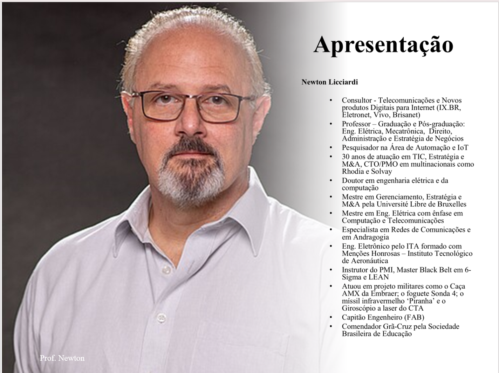
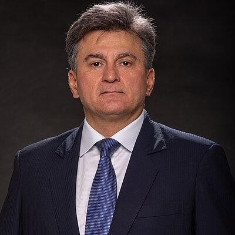

APRESENTAÇÃO DOS PROFESSORES
Duas trajetórias. Uma série.
Professores da Engenharia Elétrica do Mackenzie, conectando fundamentos, aplicações e reflexão sobre o uso de drones.

APRESENTAÇÃO • 01
Prof. Dr. Newton Licciardi Jr.
Professor e pesquisador em automação e IoT, com experiência em telecomunicações e projetos de defesa.
Doutor em engenharia elétrica e da computação e engenheiro eletrônico pelo Instituto Tecnológico de Aeronáutica (ITA). Atua no ensino de graduação e pós-graduação e em consultoria sobre telecomunicações e produtos digitais. Sua trajetória inclui liderança em tecnologia, estratégia e projetos de engenharia.

APRESENTAÇÃO • 02
Prof. Dr. Anderson da Silva Jucá
Professor de Engenharia Elétrica da Universidade Presbiteriana Mackenzie e professor instrutor desta série.
Mestre (1998) e doutor (2003) pela Escola Politécnica da USP, na área de Sistemas de Potência. Integra o grupo Energia e Sistemas de Potência do Mackenzie, aproximando ensino, pesquisa e aplicações em engenharia elétrica.